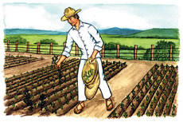
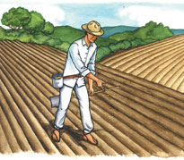

le propuso que si sus tierras producían mas trigo que el pequeño pedazo de tierra que poseía el reino el le entregaría su reino y así el seria el gobernante de todo el reino, el granjero confiado de que poseía muchas mas tierras del reino acepto la apuesta y se dedico a sembrar.
 